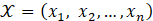
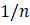
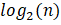
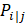
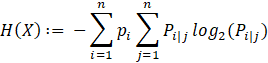
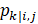
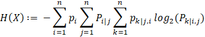
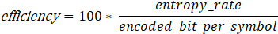

What Entropy Tells us about Data Compression
Introduction
When we implement a data compression technique, one of the first questions we might ask is “how well does it work?” Looking at the ratio of the sizes for input versus output (the compression ratio) gives us a place to start. But the answer it provides is incomplete. The compression ratio depends as much on the nature of the input data as it does the effectiveness of the compression technique. A very simple input set – one that consists of a single data value repeated multiple times – will yield a high compression ratio for virtually any implementation. A complex data set, or one consisting of highly random values, may resist even the best compression techniques.
To understand the effectiveness of a compression technique, we need a way to assess the complexity of an input data set. One tool for doing so is provided by the information entropy metric introduced by Claude Shannon in his ground-breaking paper “A Mathematical Theory of Communication” (Shannon, 1948).
Entropy
In the 1940’s, Shannon developed a mathematically rigorous treatment of the problem of transmitting digital data over a noisy communications channel (Soni & Goodman, pg. 115). The resulting 77 page paper has been called “one of the great analytical achievements of the 20th century” (MIT, 2001). Its primary focus was establishing a mathematics-based framework for error-free communications. But, in doing so, the paper provided the theoretical underpinnings modern data compression. Part of that was the introduction of the concept of entropy. What was the lowest bound to which a data source could be encoded without a loss of information? Indeed, how could we even define the idea of information?
Shannon realized that the information content of a text could be quantified based on the idea of predictability. Consider a text consisting of a single character repeated many times. Since the value of the next symbol in the text is always known beforehand, it conveys no new information. Alternatively, consider a case where a text consists of a non-trivial symbol set and the selection of the next symbol in a sequence cannot be predicted with perfect certainty. Shannon demonstrated that each new symbol would contribute information based on the degree to which it was unpredictable. Shannon provided a way of quantifying this process using a metric he named entropy.
Shannon also demonstrated that the entropy metric represents the lowest bound to which a text could be compressed without loss of information. This result is known as the source coding theorem (Wikipedia 2024c). It applies in cases where a variable-length binary code is assigned to each unique symbol in an arbitrary text or sequence of numeric values. In such cases, the theorem allows us to use the entropy calculation as a way of evaluating the effectiveness of a data compression implementation.
Note: For an engaging and entertaining explanation of the entropy concept, see Josh Starmer’s video Entropy (for Data Science) Clearly Explained!!! on YouTube (Starmer, 2024).
The entropy calculation
Let’s look at Shannon’s entropy calculation. Consider a text to be a data set that consists of a set of unique values  each occurring in the body of the text with a distinct probability . These values may be letters of the alphabet, numerical values for a raster data product, or any information that can be serialized and encoded. For our purposes, we can write Shannon’s entropy equation as

Because we are interested in digital applications, we use the log base 2 to obtain a value in bits. Shannon’s proofs and derivations use the log base e. In that form, the computation is unitless. Applying the log base 2, allows us to describe entropy in terms of a rate given in “bits-per-symbol”. Incidentally, the term “bits” was introduced in Shannon’s original paper. He attributed the term to J.W. Tukey (Shannon, pg. 1).
The concept of information entropy should not be confused with the idea from physics, though the equation above resembles Gibbs formula (Wikipedia, 2024a). Shannon himself claimed that he chose the term entropy based on the suggestion of John von Neumann (Soni & Goodman, pg. 162).
Applying entropy
To illustrate the entropy concept, let’s consider a couple of special cases.
Natural language text: The probability for each symbol in the alphabet is computed based on the number of times it occurs in the text divided by the total number of symbols in the text. In western languages the vowel ‘e’ occurs more frequently than the character ‘q’. So the character ‘e’ has a high probability and the character ‘q’ a low probability. Using that approach to evaluate a text extract from this document produces an entropy value of approximately 4.79.
Text consisting of a single value: When the text is just a single symbol repeated multiple times, the value of each symbol is completely predictable. The probability of that value is always 1. So the log of each probability 1.0 is zero. Thus the entropy would be zero. As noted above, a data set with low entropy compresses readily (or, in this case, trivially).
All symbols have uniform probability: If all symbols in a text are equiprobable, then they have the probability of  where n is the number of unique symbols in the text. Plugging that probability into the equation above, we see that the entropy of the data set is simply . This situation would occur if:
- All values in a data set are unique
- A sufficiently large data set consists of random values.
Higher order models for entropy and conditional probability
The entropy specification presented above does not consider the order of symbols. It treats the probability of any particular symbol as independent of the symbols that precede it. That formulation is often referred to as a first-order model. In practice, of course, the probability of finding a character in natural language text or a value in numeric sequences is often influenced by its predecessors. For example, in languages with Latin roots, the letter ‘q’ is generally followed by the letter ‘u’. So the probability of a particular letter having the value ‘u’ varies significantly depending on whether the previous letter was a ‘q’ (question, qu’est-ce que, queso, quindici, quem,…, quod erat demonstrandum).
Since Shannon’s original publication, investigators have established definitions for entropy that treat symbol sequences based on conditional probability. For example, the second-order model for entropy couples the probability of a particular symbol to the value of the symbol that preceded it.
Let  be the conditional probability that the present symbol is the j-th entry in the symbol set given that the previous symbol is the i-th symbol. Then the second-order entropy can be computed as
The second-order entropy for this document is 3.54. Higher-order computations follow the pattern shown in the formula above. We can extend it for third-order entropy where  is the conditional probability that the present symbol is the k-th entry in the symbol set given that the previous two symbols were the i-th and j-th entries
Entropy, Huffman coding, and effective data compression
Huffman coding is a data compression technique that uses variable-length bit sequences to encode individual entries in a symbol set. The encoding for each symbol is based on the frequency of its occurrence within the text. The most common symbols are assigned short sequences. Less common symbols are assigned longer sequences. Since Huffman coding does not consider the order of symbols within a text, its structure meets the conditions of the first-order entropy equation.
The Huffman coding technique can be conceptualized as a binary tree. The process for decoding a bit sequence begins with the root node of the tree and traverses left or right depending on the value of each bit in the encoded sequence. When the process reaches a terminal node (a “leaf” node), the symbol associated with the node is added to the decoded text.
Figure 1. below shows the Huffman tree constructed for the text “tree”. The probabilities for various symbols are shown in the ‘p’ column in the frequency table (note that they are all negative powers of 2). The structure of the Huffman tree is determined based on the computed probabilities for each symbol in the text. The letter ‘e’ occurs most frequently, so is assigned a shorter sequence than ‘t’ or ‘r’. The bit sequence for the encoded text is 111000.
Limitations of Huffman revealed by entropy calculation
The encoded text for “tree”, 111000, is six bits long and has an average of 1.5 bits per symbol. The computed entropy rate for the text is also 1.5 bits per symbol. For this particular text, the Huffman code is optimum. For most texts, Huffman is optimal, but not truly optimum. Consider the code tree that results when we append the letter ‘s’ to the end of our text to get “trees”.
The encoded text, 1011100110, is now 10 bits long. The text has an entropy rate of 1.922 bits/symbol, but its average encoding rate is 2.0 bits/symbol. Based on that, we might wonder why the “optimal” Huffman coding is producing a encoding rate that higher than the lower bound indicated by the entropy rate. It turns out that the Huffman code is constrained by the mechanics of a encoding in which each unique symbol is assigned a specific sequence of bits. That constraint leads to the situation in which the construction of the Huffman tree can only represent probabilities that are a power of two. Referring to the frequency table in Figure 2 above, we see that the probabilities in the ‘p’ column are not integer powers of two. So the Huffman results are only optimal within the constraints of how they are coded.
By revealing that the Huffman code does not always reach the true lower bound for an encoding rate, the entropy measurement suggests that there might be an opportunity for more efficient encoding algorithms. And, indeed, more recent data compression techniques such as Arithmetic Coding and Asymmetric Numeral Systems improve on Huffman by operating over accurate representations of probability (at the cost of more elaborate processing and software complexity).
Overhead elements for Huffman coding and other techniques
To be useful, of course, it is not enough for a compressor to encode a data set. It also has to provide a means of extraction. Each text can, potentially, have a unique code alphabet. To ensure that a Huffman coded message can be extracted by a receiving process, the message must include information about how the text was encoded. Naturally, this information adds overhead to the overall size of the encoded message. Naïve software implementations sometimes include a “frequency table” giving the counts for each symbol so that the Huffman tree can be reconstructed by the receiver. Unfortunately, storing a frequency tables may require a large number of bytes. Better implementations (such as the one found in the Gridfour software library) may use schemes such as encoding the structure of the Huffman tree as a preamble to a transmitted text
Putting it all together
We exported the text for an early version of this document to an 8-bit text file. Running the text through a first-order entropy computation and a Huffman coding implementation yielded the following results:
Huffman encoding
Huffman tree overhead: 887 bytes, 10.08 bits/unique symbol
Encoded size
Including overhead: 4.86 bits/symbol
Excluding overhead: 4.82 bits/symbol
Efficiency
Including overhead: 97.6 %
Excluding overhead: 99.4 %
Excluding the overhead, the efficiency for the implementation could be computed as a percentage using the following:
Excluding the overhead for the Huffman tree, the implementation had an efficiency of 99.4 percent. Including the overhead, the implementation had an efficiency of 97.6 percent.
For many data compression techniques, the efficiency calculation is useful as a diagnostic tool. A poor efficiency rating would indicate that there might be a problem with an implementation. Efficiency also has the advantage of being robust with regard to the entropy in the source data. If an implementation is suitable to a data set, even a data set with a high entropy value might still produce a good efficiency score.
Beyond entropy-based compression: the Deflate algorithm
Because the Huffman technique does not consider the order of symbols within the text, it cannot take advantage of sequences of symbols such as those described in the section on second-order entropy above. More recent techniques, such as Lempel-Ziv and Deflate, improve data compression ratios by looking at repetitive groups of symbols occurring in a text.
The Deflate technique is used in the zip utility, the PNG image format, and in many other software products. It usually out-performs Huffman. In fact, the bits-per-symbol value for a Deflate compressed text is often lower than either the first or second-order entropy rates. For the sample text cited above, we have the following results:
First-order Entropy: 4.81
Second-order Entropy: 3.53
Deflate: 3.16
The entropy definition is not a good match for the process implemented for the Deflate technique. In fact, the bits-per-symbol averages obtained from Deflate may be less than the computed entropy rates. So, in the case of Deflate, the entropy rate does not represent a lower bound for the compression technique. Even so, there is often a loose coupling between the entropy for a data source and the relative size of Deflate-compressed product. The figure below compares bit rates for terrestrial elevation data taken from the Shuttle Radar Topography Mission (NASA, 2020). The original elevation data was stored as integer values in raster data files (TIFF format) without data compression. The Deflate technique was applied directly on the source data. And, while there is not a perfect relationship between the entropy and Deflate output, a general trend is clearly visible.
Conclusion
By providing insight into the complexity of a data source, the entropy metric provides a tool for evaluating the effectiveness of a data compression technique. Cases where the entropy rate indicates that a data compressor performs poorly may indicate opportunities for refining an algorithm or investigating the correctness of a particular implementation.
References
Fano, R.M. (1949). The transmission of information. Technical Report No. 65. Cambridge (Mass.), USA: Research Laboratory of Electronics at MIT.
Huffman, D. (1952). A method for the construction of minimum-redundancy Codes. Proceedings of the IRE. 40 (9): 1098–1101. doi:10.1109/JRPROC.1952.273898.
MIT editors. (2021, July 1). Claude Shannon: reluctant father of the digital age. MIT Technology Review. Accessed from https://www.technologyreview.com/2001/07/01/235669/claude-shannon-reluctant-father-of-the-digital-age/
National Aeronautics and Space Administration [NASA]. (2020). Shuttle Radar Topography Mission (SRTM) https://www2.jpl.nasa.gov/srtm/ Data was downloaded from the USGS Earth Explorer web site at https://earthexplorer.usgs.gov/.
Shannon, C. (July 1948). A mathematical theory of communication (PDF). Bell System Technical Journal. 27 (3): 379–423. doi:10.1002/j.1538-7305.1948.tb01338.x. hdl:11858/00-001M-0000-002C-4314-2. Reprint with corrections hosted by the Harvard University Mathematics Department at https://en.wikipedia.org/wiki/Harvard_University (accessed November 2024).
Soni, J., & Goodman, R. (2017). A mind at play: how Claude Shannon invented the information age (First Simon & Schuster hardcover edition.). Simon & Schuster.
Starmer, J. [Stat Quest] (2024). Entropy (for Data Science): Clearly Explained!!! [Video]. YouTube. https://www.youtube.com/watch?v=YtebGVx-Fxw
Wikipedia contributors. (2024a, October 3). Josiah Willard Gibbs. In Wikipedia, The Free Encyclopedia. Retrieved 17:02, October 15, 2024, from https://en.wikipedia.org/w/index.php?title=Josiah_Willard_Gibbs&oldid=1249234374
Wikipedia contributors. (2024b, October 14). Huffman coding. In Wikipedia, The Free Encyclopedia. Retrieved 18:03, October 14, 2024, from https://en.wikipedia.org/w/index.php?title=Huffman_coding&oldid=1245054267
Wikipedia contributors. (2024c, May 2). Shannon's source coding theorem. In Wikipedia, The Free Encyclopedia. Retrieved 13:01, October 3, 2024, from https://en.wikipedia.org/w/index.php?title=Shannon%27s_source_coding_theorem&oldid=1221844320